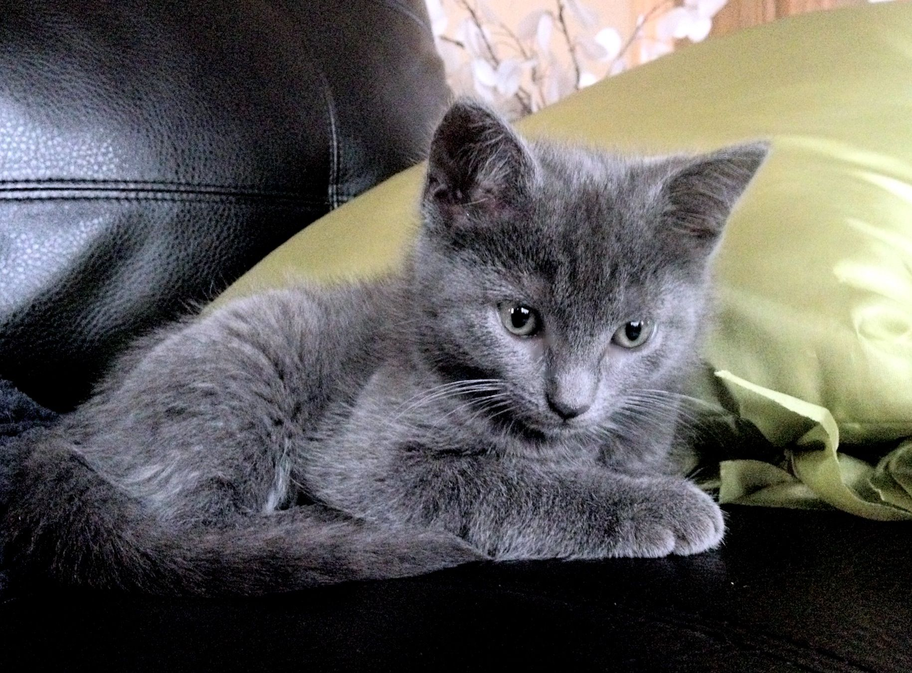
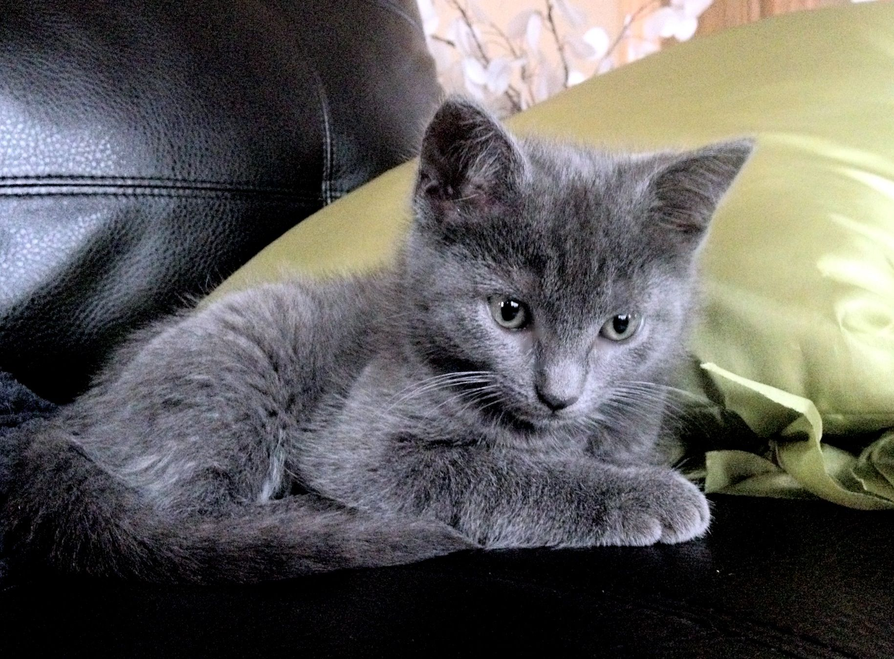
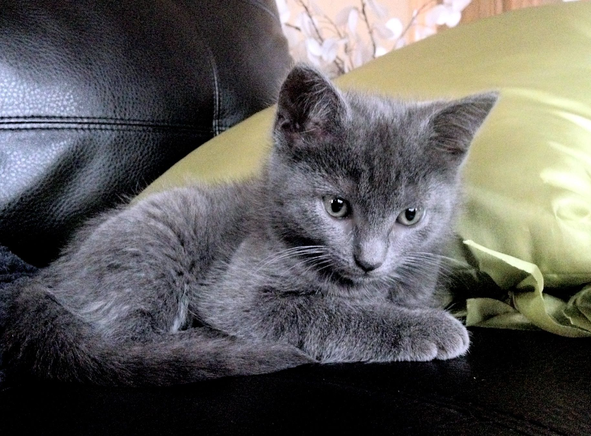

Images
 

The Russian Blue Cat commonly referred to as just Russian Blue, is a cat breed with colors that vary from a light shimmering silver to a darker, slate grey. The short, dense coat, which stands out from the body, has been the breed's hallmark for more than a century. Anecdotal evidence suggests that the Russian Blue may be better tolerated by individuals with mild to moderate allergies. Because of this, Russian Blues are very popular with people with allergies all around the world.
